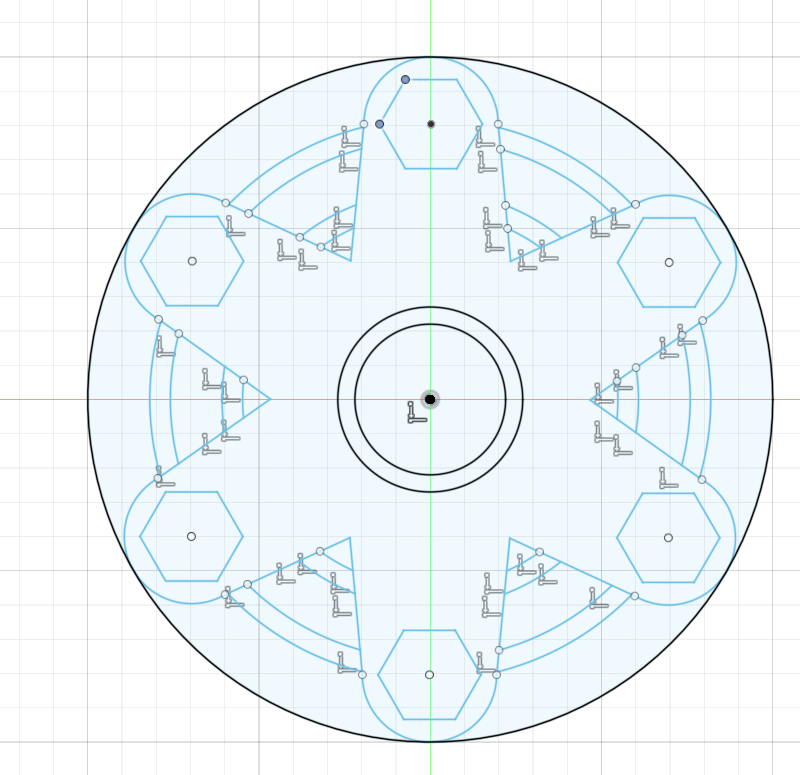
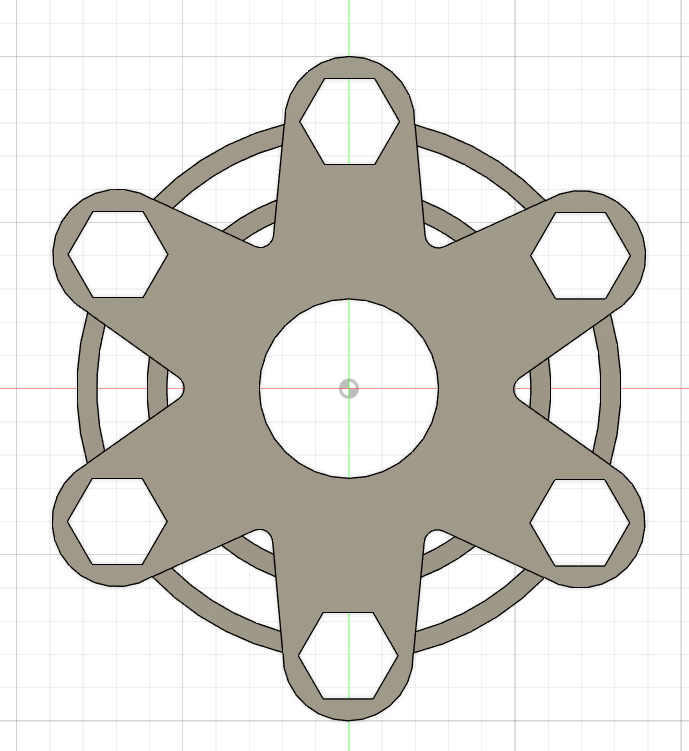

Computer Aided Design
Fidget Spinner
The process of making our own fidget spinner was quite straight forward.The specifications of the design is:
- We are provided with a ABEC 608 Bearing dimensions 8 x 22 x 7 mm for the rotation device and M8 Stainless Steel hex nuts as counter-weights.
- The radius of the fidget spinner should not exceed 50mm (40mm if you have small hands!) otherwise we will not be able to spin it.
- The maximum thickness of your fidget spinner 8 mm to accommodate the bearing and the M8 nuts.
I first started by creating a 50mm diameter circle as a maxmimum marking for my spinner.I then designed the arm of the spinner according to the dimensions given and added the hexagon to house the nut and the circle in the middle to house the bearing. I then used the circular feature to duplicate the arms evenly. I decided to go for 6 arms. The final thing i did, sketch-wise, was just a random ciruclar ring for design sake.
Once that is done, I extrude each side by 4mm since the maximum thickness is 8mm. I lastly used a fillet to fillet the corners. Below is my finished product.
